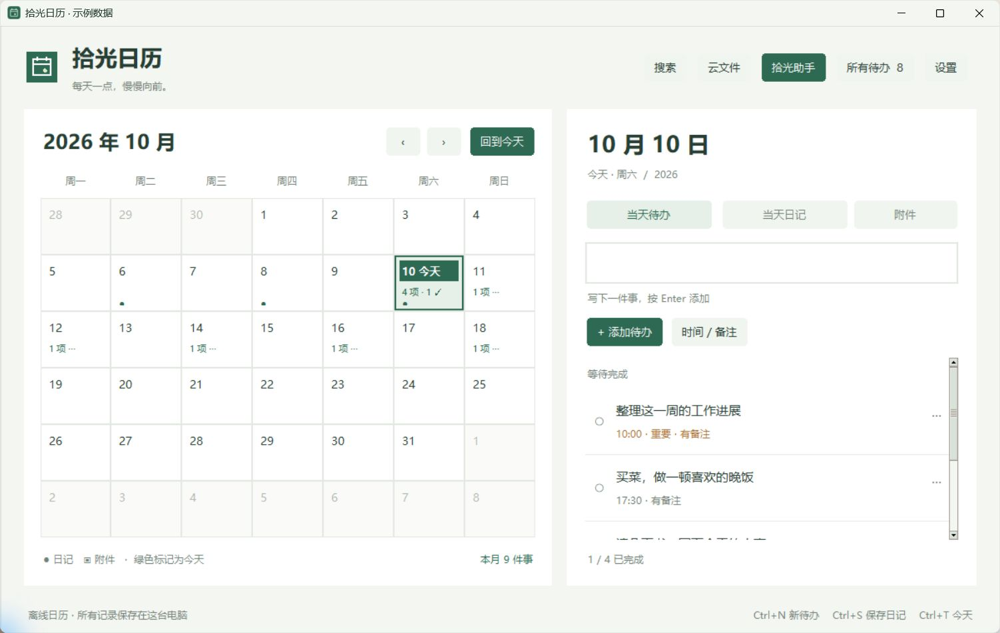
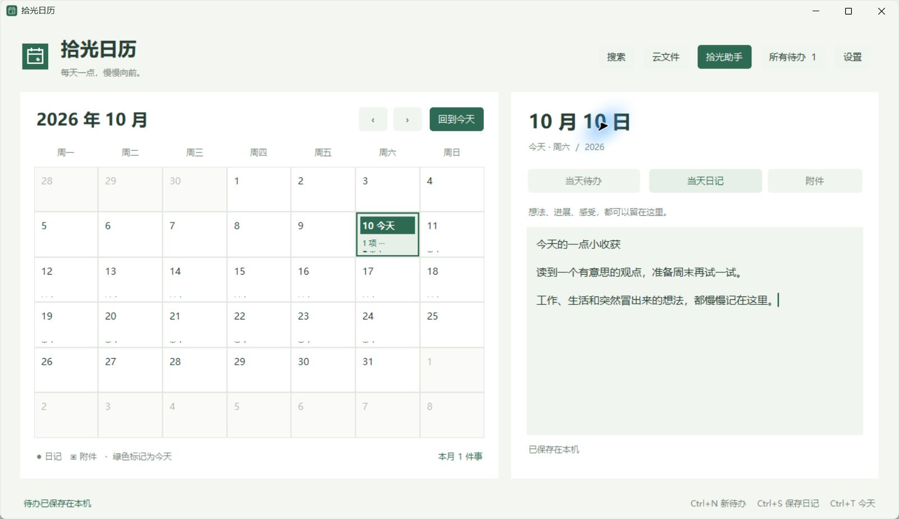

今天，要做哪几件事？
点一下今天，写下待办。重要的标一下，有约定的加个时间，完成一件就勾掉一件。
“下班顺路买菜”
“把初稿再推进一点”
“把初稿再推进一点”
每天一点，慢慢向前
买菜、读书、工作进展，
还有那些突然冒出来的想法。
在电脑里，给它们一个好找的地方。

FOR YOUR EVERYDAY
不用写得完整，也不用把每一分钟排满。
点一下今天，写下待办。重要的标一下，有约定的加个时间，完成一件就勾掉一件。
读书时的一句话、散步时的灵感、工作上的小进展。自由写，草稿会自动保存在电脑里。
翻翻日历、看看完成的事情。用记得的几个词找旧笔记，给下一周留一点清晰。

A LITTLE SPACE FOR YOU
几句话也可以，一张清单也可以。
你决定记什么，什么时候回来看。
LET’S GET STARTED
先开始记录，AI 可以以后再配置。
Windows 按向导安装；Mac 将 App 拖入应用程序。欢迎页选语言，点击“先开始记录”。不需要写代码或安装 Python。
点“回到今天”，输入“晚上散步”，按 Enter 添加。需要时在当前窗口内点选时间。
切到“当天日记”写一点想法，看到“已保存到本机”即可。
“明天下午想读书、收拾房间，
帮我起草一下安排。”
AI 需要联网和自己的服务商额度。使用助手时，问题、近期对话及相关档案会发给所选服务商。普通记录无需 AI。
BEFORE YOU START
能。日历、待办、日记、附件和本机搜索都可以离线使用，不需要注册拾光账号。AI 问答是可选功能，需要联网并连接自己的服务。
记录功能把资料保存在你的电脑里。你主动使用助手提问时，问题、近期对话及相关档案才会发给你选择的 AI 服务商。设置里可以导出完整备份。GitHub 私有仓库同步默认不开启；需要时登录并授权自己的私有仓库。单附件50 MiB、当前附件合计500 MiB，Git 历史另计。
当前程序可直接下载使用，基础记录无需购买 AI 服务。在线助手使用你自己的服务商账户，费用和免费额度按该服务商规则计算。
支持 Windows 10/11 x64、macOS 15+ 的 M 系列与 Intel 电脑。暂时没有手机版或到点弹窗提醒；GitHub 同步已内置公开应用配置，Mac 与双设备同步仍待验证。可以先用它安排和记录电脑前的日常。
一般选择上方的“下载 Windows 版”。免安装 ZIP 需要完整解压并保留运行库文件夹。GitHub 的 Source code 是源码，普通使用者无需下载。v1.9.2 仍是预览版，Windows 尚未签名，Mac 尚无 Apple Developer ID 签名或公证，遇到问题可从下方反馈入口说明操作步骤。
普通用户不需要注册开发者应用或填写密钥。使用自己的账号，创建私有仓库、授权并在拾光中关联即可。首次配置、网络超时、登录过期和附件超限的处理步骤，见同步上手与排错指南。只在本机使用可跳过同步。
哪一步不方便？哪件日常小事，希望更轻松一点？